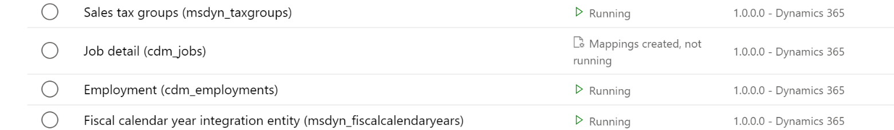
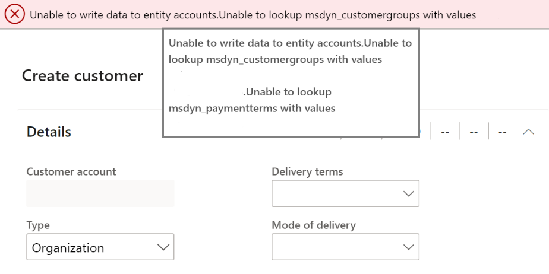
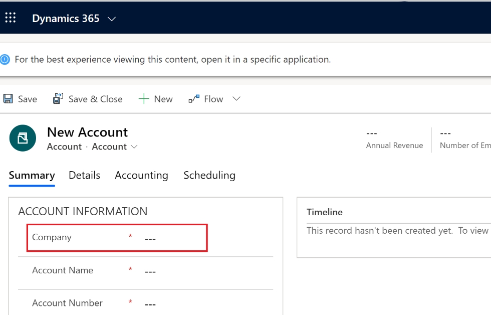

Überprüfen, ob duales Schreiben in Finance and Operations-Apps und Dataverse konfiguriert ist
[!include[banner](../../includes/banner.md)][!include[rename-banner](~/includes/cc-data-platform-banner.md)]Dieses Thema enthält Problembehandlungsinformationen zur dualen Schreibintegration zwischen den Apps Finance and Operations und Dataverse. In diesem Thema wird speziell erläutert, wie Sie feststellen können, ob Dual-Write in Finance and Operations Apps und in Dataverse konfiguriert ist.
Überprüfen, ob duales Schreiben in Finance and Operations Apps konfiguriert ist
Um festzustellen, ob die Fehler, die beim Speichern von Zeilen für die Aktualisierung angezeigt werden, auf Dual-Write zurückzuführen sind, überprüfen Sie zunächst, ob Dual-Write konfiguriert ist.
Wenn Sie Administratorrechte in der Finance and Operations App haben, gehen Sie zu Arbeitsbereiche > Datenmanagement und wählen Sie die Kachel Duales Schreiben. Wenn die Details der verknüpften Umgebungen und die Liste der ausgeführten Tabellenzuordnungen angezeigt werden, ist Dual-Write konfiguriert.

Wenn Sie keine Administratorrechte haben, erhalten Sie eine Fehlermeldung: Daten können nicht in die Entität geschrieben werden <entity name>. Im Beispiel in der folgenden Abbildung können Sie keine Kundenzeile in der Finance and Operations-App erstellen, da Dual-Write konfiguriert ist, die Referenzdaten für die Kundengruppe und die Zahlungsbedingungen in Dataverse jedoch nicht vorhanden sind.

Informationen zum Beheben von Problemen beim Erstellen von Daten in Finance and Operations Apps, siehe Beheben Sie Probleme mit der Live-Synchronisierung.
Überprüfen, ob duales Schreiben in Dataverse Apps konfiguriert ist
Wenn Sie Daten erstellen, sehen Sie das Feld Unternehmen auf Seiten in Dataverse. Dual-Write ist konfiguriert.

Informationen zum Beheben von Problemen beim Erstellen von Daten in Dataverse Apps, siehe Beheben Sie Probleme mit der Live-Synchronisierung.
Informationen zum Anzeigen von Fehlerdetails, wenn beim Erstellen von Daten Fehler auftreten Dataverse, gehen Sie zu Aktivieren und Anzeigen der Plug-In-Ablaufverfolgungsanmeldung Dataverse, um Fehlerdetails anzuzeigen.